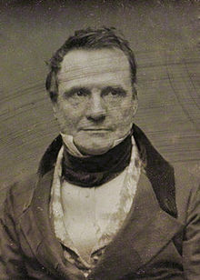

Not much is known for certain about Babbage;s early life. According to the Oxford Dictionary of National Biography he was born in London, England on Walworth road, a blue plaque was placed to commemorate this.
Babbage came from a wealthy family of bankers and was eventually sent to a country school near Exeter. This was mainly done so that he could recover from a life threatning fever. While he did attempt to attend more regular classes his ill health unfortnately forced him to utilise private tutors instead.
Charles Babbage attended the university of Cambridge after spending a large amount of his youth with private tutors due to his ill health.
During his time there he joined many societies and formed his own one known as the Analytical Society.
He graduated but without honours, the reason for this is unclear however it is believed that it is because the thesis he defended was considered blasphemous at the time.
